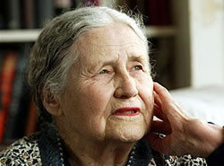

گزارش ایسنا
نويسنده انگليسی که در ايران متولد شده برندهي جايزهي نوبل ادبيات سال 2007 شد.
به گزارش (ايسنا)، اين نويسندهي انگليسي بهخاطر شغل پدرش سال 1919 در كرمانشاه متولد شد و تا حدود ششسالگي در ايران بود. سپس چندين سال در كشورهاي آفريقايي ساكن شد و از سال 1949 به اروپا رفت و هماكنون در لندن زندگي ميكند.
آكادمي نوبل در سوئد لحظاتي پيش اعلام كرد، لسينگ كه تصويرگر تجربهي زنانه است، بهدليل شور و اشتياق، شكورزي و قدرت بصيرت خود، تمدن تقسيمشده را مورد بررسي دقيق قرار داده است.
لسينگ يكصد و چهارمين برندهي جايزهي نوبل ادبيات است، كه از سال 1901 راهاندازي شده است.
اين جايزه سال پيش به اورهان پاموك - نويسندهي ترك - و سال قبل از آن به هارولد پينتر - نمايشنامهنويس انگليسي - اهدا شد.

گزارش ایرنا:
ایرنا در گزارشی خبر داد یک نویسنده سالخورده انگلیسی که در ایران متولد شده، جایزه ادبیات نوبل سال ۲۰۰۷را تصاحب کرد.
خانم "دوریس لسینگ" نویسنده انگلیسی ۸۷سال دارد و ۶۳سال است که به داستان نویسی و سرودن شعر اشتغال دارد.
لسینگ در ۲۲اکتبر ۳۰) ۱۹۱۹مهر (۱۲۹۸در شهر کرمانشاه در غرب ایران از یک خانواده انگلیسی مهاجر در آسیا و آفریقا متولد شده و چند اثر با موضوع عرفانی تصوف در کارنامه خود دارد.
پدر برنده جایزه نوبل ادبیات در سالهای آخر حکومت قاجار، کارمند بانک شاهی انگلیس در کرمانشاه بود.
آکادمی سوئد در بیانیه خود برای اعطای جایزه ادبی نوبل به لسینگ از وی چنین یاد کرده است: حماسهنویسی که تجربه زنانه را با تلفیقی از قدرت بدبینی، آتش و بصیرت را سوژه آثار خود قرار داده است.
در آستانه ۸۸سالگی، لسینگ سالخوردهترین نویسندهای است که در تاریخ جایزه ادبی نوبل به او اعطا شده است.
پیش از این، "تئودور مومسن" ۸۵ساله سالخوردهترین نویسندهای بود که به دریافت جایزه ادبی نوبل نائل شده بود.
خانواده لسینگ از سال ۱۹۲۵در زیمبابوه (مستعمره رودزیای سابق) سکونت داشتند و کودکی وی در مستعمرات انگلیس در آفریقا سپری شد.
لسینگ در سال ۲۰۰۱نیز برای آثاری که در دفاع از آزادی و دفاع از حقوق جهان سوم نوشت، به دریافت جایزه ادبی شاهزاده اتریش نایل شد.
آثار لسینگ معمولا به سه دسته تقسیم میشود: دوران تمایلات کمونیستی از ۱۹۴۴تا ،۱۹۵۶آثار روانکاوانه از ۱۹۵۶تا ۱۹۶۹و آثار ادوار پس از آن اغلب با موضوعات تصوف و عارفانه.
نخستین اثر قابل توجه لسینگ در سال ۱۹۵۰منتشر شد و برخی از مهمترین آثار او عبارتند از:
" :۱۹۵۰چمن وار میخواند"
" :۱۹۵۲جستجوی مارتا"
" :۱۹۵۳پنج داستان کوتاه"
" :۱۹۵۴ازدواج مناسب"
" :۱۹۵۸عادت زندگی"
" :۱۹۵۹گوشهنشینی بیگناه و چهارده شعر"
" :۱۹۶۲بازی با ببر" و "دفترچه طلایی"
" :۱۹۶۳یک مرد و دو زن"
" :۱۹۶۶موج توفان" و "مدونای سیاه"
" :۱۹۶۸بازگشت به خانه"
" :۱۹۶۹شهر چهار دروازه"
" :۱۹۷۲داستان مرد مجرد و دیگر داستانها"
" :۱۹۷۳مجموعه داستانهای آفریقا" و "تابستان قبل از تاریکی" " :۱۹۷۵خاطرات یک نجات یافته"
" :۱۹۸۱یک تجربه سوری"
" :۱۹۸۳خاطرات یک همسایه خوب"
" :۱۹۸۴اگر ابرهای پیر..." و "خاطرات جین سامر"
" :۱۹۸۵تروریست خوب"
" :۱۹۸۷زندانی که ما برای زیستن در آن برمیگزینیم" و "باد کلمات ما را میبرد"
" :۱۹۸۸فرزند پنجم"
" :۱۹۹۲چیزهای واقعی: داستانها و پیش نویسها" و "خنده آفریقایی چهار دیدار از زیمبابوه".
" :۱۹۹۴سایه دیوار غار" و "یک صدای شخصی کوچک (مجموعه مقالات، سخنرانیها و مصاحبهها"
۱۹۹۴به بعد: "زیر پوست من: زندگینامه خود نوشت چهار جلدی)" " :۱۹۹۵جاسوسی که من میشناختم و دیگر داستانها"
" :۱۹۹۶بار دیگر عشق"
" :۱۹۹۷مارا و دان، یک ماجرا"
" :۲۰۰۲بن در جهان" و "درباره گربهها"
" :۲۰۰۴مادربزرگ: چهار داستان کوتاه" و "زمان گزنده است"
" :۲۰۰۶داستان ژنرال دان و دختر مارا"
" :۲۰۰۷شکاف"
گزارش صدای آلمان
دوریس لسینگ نویسندهی بریتانیایی برنده جایزه نوبل امسال شد. لیسنگ که متولد ۲۲ اکتبر ۱۹۱۹ است در کرمانشاه متولد شده است. او در نوجوانی با رنج و فلاکت مردم، خاصه در کشورهای مستعمره آفریقا آشنا شد. از این طریق تصویرهایی در ذهن او حک شد، که بعدها در آثار او راه یافتند.
او در دوره اول نویسندگی خود عمدتا به مسائل اجتماعی پرداخته است، سپس از منظر روانشناختی به موضوعها نگریسته و در دورهی اخیر به عرفان گرویده است. از جملهی آثار اویند: "دفتر یادداشت طلایی"، "ازدواج موفق"، "گرسنگی"، "سبزه آواز می خواند"، "خاطرات یک نجات یافته" و "تابستان پیش از تاریکی".
جایزهی نوبل از سال ۱۹۰۱ به آفرینندگان آثار بزرگ ادبی اهدا میشود. پیش از دوریس لسینگ ده زن نویسنده و شاعر این جایزه را دریافت کردهاند.
گزارش بی بی سی
دوریس لسینگ سه بار کاندیدای دریافت جایزه بوکر شده است
آکادمی سوئدی نوبل، دوریس لسینگ نویسنده برجسته بریتانیایی را برنده جایزه امسال در رشته ادبیات معرفی کرده است.
روز پنجشنبه، ۱۱ اکتبر، آکادمی علوم سوئد، که برندگان جوایز نوبل در رشته های مختلف را بر می گزیند، اعلام داشت که جایزه نوبل ادبی امسال را به خانم لسینگ، ٨۷ ساله، به خاطر ۵۷ سال فعالیت ادبی اعطا خواهد کرد.
خانم لسینگ از والدینی بریتانیایی در کرمانشاه ایران متولد شد.
خانم لسینگ در کنار دریافت جایزه نقدی (حدود یک میلیون و چهار صد هزار دلار) یک مدال طلا نیز دریافت می کند. از وی همچنین دعوت خواهد شد تا برای ایراد سخنرانی در مقر آکادمی نوبل در شهر استکهلم سوئد حضور یابد.
معروف ترین آثار این نویسنده بریتانیایی "دفترچه طلایی"، "خاطرات یک نجات یافته" و "تابستان پیش از تاریکی" است.
آکادمی نوبل درباره خانم لسینگ گفت: "حماسه سرایی از تجربیات زنانه که با نگرشی نقادانه، شوریدگی و قدرت ژرف اندیشی، تمدنی غیرمنسجم را موشکافی کرده است."
دوریس لسینگ یازدهمین زنی است که این جایزه را از آغاز اعطای این جوایز در سال ۱۹۰۱ از آن خود کرده است.
وی دومین نویسنده بریتانیایی برنده نوبل ادبی بوده است. در سال ۲۰۰۵ هرولد پینتر، نمایشنامه نویس برجسته انگلیسی جایزه نوبل ادبی را دریافت کرد.
انتظار می رود که دریافت جایزه نوبل ادبی باعث افزایش فروش کتاب های خانم لسینگ شود و آثار وی که مدتی است تجدید چاپ نشده نیز بار دیگر منتشر شود.
سال گذشته آکادمی نوبل، جایزه ادبی را به اورهان پاموک، نویسنده اهل ترکیه داد.
آقای پاموک از جمله به خاطر دیدگاهش درباره کشتار ارامنه ساکن ترکیه در سال های جنگ اول جهانی و همچنین کشتار وسیع کردهای ترکیه در زادگاهش مورد پیگرد قانونی قرار گرفته است.
پیگرد این نویسنده ترک انتقاد و اعتراض هایی را به خصوص در خارج از ترکیه در پی داشت که این اقدام را منافی اصل آزادی بیان توصیف کرده بودند.
به گفته آکادمی نوبل جایزه ادبی "به نویسنده ای اعطا می شود که در عرصه ادبی برجسته ترین آثار آرمانگرایانه را خلق کرده باشد."
بسیاری دریافت جایزه ادبی نوبل را، که هر ساله در ماه اکتبر اعلام می شود، بالاترین افتخار برای نویسندگان می دانند.